貓咪疫苗怎麼打香菇爸護貓小筆記
VACCINE
三合一？五合一？
三合一？五合一？
疫苗一次看懂
打哪種 → 什麼時候打 → 打之前 → 打之後
01
三種疫苗 差在哪
先搞懂每一劑在防什麼
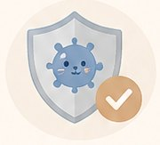
三合一貓瘟・貓鼻支・卡里西
基礎核心 大多數貓都要
基礎核心 大多數貓都要
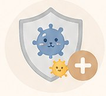
五合一三合一＋披衣菌・貓白血病
看生活環境 跟獸醫討論
看生活環境 跟獸醫討論
狂犬病3 個月大以上
依政府規定施打
依政府規定施打
🦠 這些病是什麼？
🦠
貓瘟三合一傳染力超強，嚴重吐、拉肚子，幼貓特別危險；病毒能在環境活很久，鞋底就能帶回家
🤧
貓鼻支（皰疹病毒）三合一打噴嚏、流鼻水、眼睛發炎，像重感冒；好了也可能躲在身體裡，壓力大時再發作
👄
卡里西病毒三合一嘴巴破洞潰瘍、流口水、痛到不想吃，也常有感冒症狀
👁️
披衣菌五合一主要讓眼睛紅腫、一直有分泌物，多貓家庭比較容易互相傳
🩸
貓白血病（FeLV）五合一靠口水、互舔、共用碗傳染，會讓免疫力變差；會外出或多貓家庭要考慮，打之前建議先篩檢
🐾
狂犬病法規人和動物都會感染、發病幾乎致命；台灣規定貓狗都要打
02
幼貓疫苗 時間表
一般建議 實際依獸醫評估
約 8 週第一劑 三合一或依獸醫建議用五合一
約 12 週第二劑 三合一滿 3 個月可加打狂犬病
約 16 週第三劑 三合一幼貓保護力打底完成
成貓後每年定期追加依生活環境與風險評估
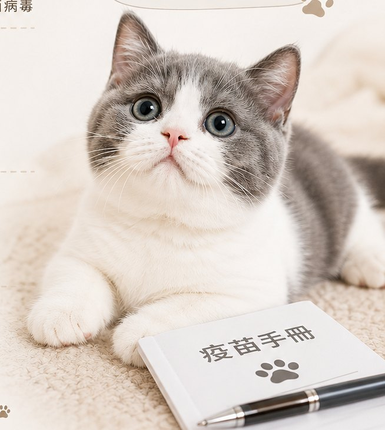
疫苗打完之前
盡量不要外出實際時間 依獸醫評估調整
盡量不要外出實際時間 依獸醫評估調整
03
打疫苗前 先確認
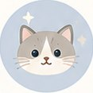
✓ 精神食慾正常活力好 吃飯正常
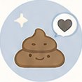
✓ 沒有明顯軟便腸胃穩定 比較安全
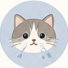
✓ 沒有感冒症狀不流鼻水 不打噴嚏
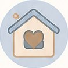
✓ 不要剛換環境先讓牠穩定下來
小貓剛到家？先這樣排
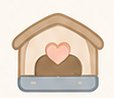
1先給安全感" loading="lazy">1先給安全感安靜的專屬小空間
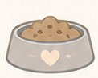
2飲食先正常" loading="lazy">2飲食先正常願意吃 吃得穩定
3觀察 3～7 天" loading="lazy">
3觀察 3～7 天慢慢熟悉環境
4再排疫苗" loading="lazy">
4再排疫苗跟獸醫討論時間
04
打完疫苗 這些很正常
身體在建立保護力
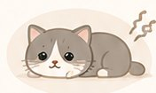
精神變安靜想睡 活力下降
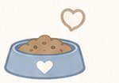
食慾稍微下降吃得比平常少一點
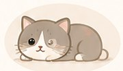
打針的地方有小硬塊摸起來有一點腫
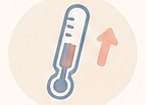
身體微微發熱摸起來比平常暖
✅ 通常 1～2 天就會恢復，讓牠好好休息
硬塊超過 1 個月沒消、或越來越大 → 找獸醫看看
這些情況 盡快找獸醫
🤮
一直吐、拉肚子
😿
精神很差、完全不吃不喝
🌡️
體溫超過 39.5°C
😮💨
呼吸急促、一直喘
💤
昏睡、叫牠反應變慢
🥺
臉腫、全身起疹子（過敏）
NEXT
🐛驅蟲怎麼選疫苗＋驅蟲 一起排›🏡新貓到家 7 天剛接回家先看這篇›📋送貓前要確認的 6 件事疫苗紀錄要看什麼›✂️結紮 要考慮的事疫苗打完 下一步›
💬問問香菇爸不確定的地方 直接傳給我↗
🖼️ 看整張海報・三種疫苗🖼️ 看整張海報・幼貓時間表🖼️ 看整張海報・打疫苗前🖼️ 看整張海報・打疫苗後
還可以看這些
關於這一頁
內容為香菇爸整理的日常照顧觀念，不是醫療建議
每隻貓狀況不同，有任何異常請先就醫
© 2026 香菇爸・原創內容